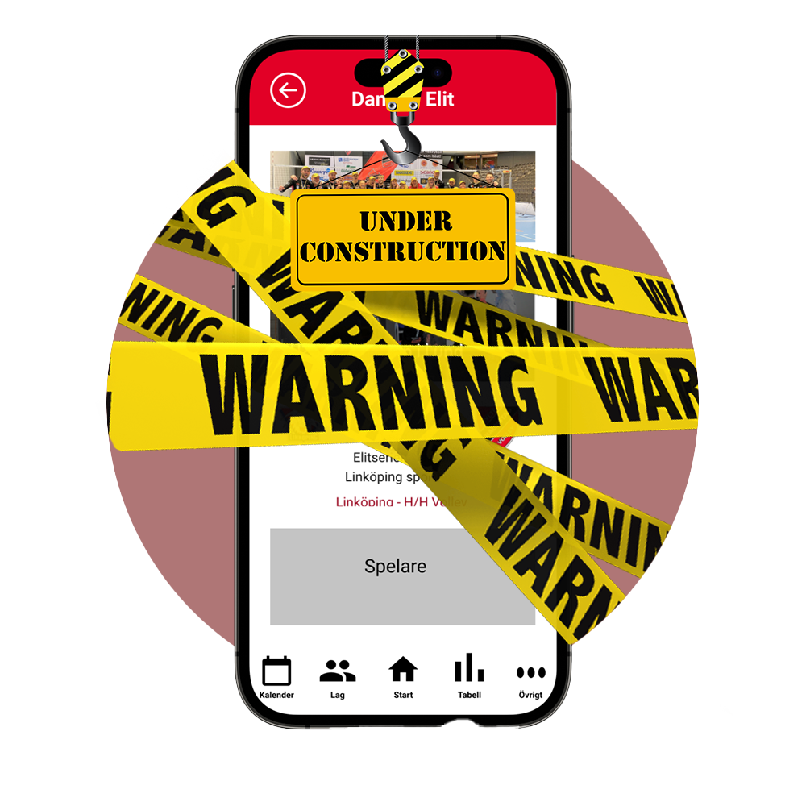
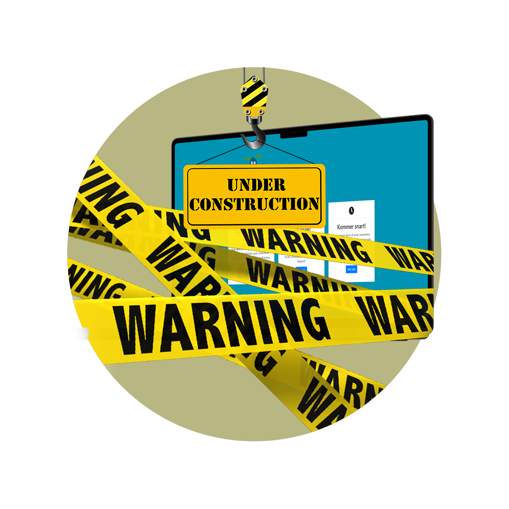

Viktor Josefsson
UX/UI Designer
Projects

Hylte/Halmstad Volley
A collaboration with Hylte/Halmstad Volley, who wanted a way to more effectively communicate with their teams and fans.
Specialisttandvården
A project in collaboration with Specialisttandvården Halland. The goal of the project was to create a prototype for a digital tool that dentists can use to inform children and adolescents with an NDD (Neurodevelopmental Disorder) diagnosis about caries.
